가입 전에 넘어야 할 관문 3개
셋 중 하나라도 못 넘기면 가입도, 결제도 하지 않습니다. 돈을 먼저 내면 되돌릴 수 없습니다.
관문 1그 곡을 만들 때 Suno가 유료였습니까
Suno는 곡을 만든 그 순간의 플랜으로 권리가 정해집니다. 지금 유료로 바꿔도 옛날 곡에는 적용되지 않습니다.
관문 2이 곡을 이미 유튜브에 올렸습니까
올렸다면 단계 3을 먼저 읽으십시오. 순서를 모르고 진행하면 내 영상에 내 음원으로 저작권 클레임이 걸립니다.
관문 3해외 결제와 영문 이름이 준비됐습니까
해외 결제가 되는 카드 또는 PayPal, 그리고 여권과 같은 영문 이름이 필요합니다. 여기저기 다르게 적으면 나중에 돈을 받는 단계에서 막힙니다.
관문 1 자세히 — Suno 플랜
| 곡을 만든 시점 | 권리 |
|---|---|
| 무료(Basic) 플랜일 때 | 곡의 주인은 Suno입니다. 개인 감상만 됩니다. 팔거나 유통하면 안 됩니다. |
| Pro / Premier 구독 중일 때 | 내 곡입니다. 상업 이용 허가가 함께 나옵니다. 나중에 구독을 끊어도 그 곡의 권리는 남습니다. |
확인 방법
- suno.com 로그인 → 내 계정 → 결제·구독 내역에서 구독 시작일을 적습니다.
- 발매하려는 곡을 열어 만든 날짜를 적습니다.
- 곡 날짜가 구독 시작일보다 앞서면 그 곡은 발매하지 않습니다.
앞선 곡을 살리는 방법
- 유료 상태에서 다시 만듭니다. 같은 가사·같은 스타일로 새로 생성하면 됩니다. 가장 확실하고 빠릅니다.
- Suno에 그 곡만 따로 상업 허가를 요청합니다. 되는 경우가 있지만 보장되지 않습니다.
- 그 곡은 유튜브 영상용으로만 두고 발매에서 뺍니다.
얼마이고, 어느 플랜을 사야 하나
디스트로키드는 내 음원을 전 세계 음원 매장에 대신 넣어 주는 회사입니다. 곡을 아무리 많이 올려도 1년 구독료 한 번이고, 스트리밍 수익은 100% 내가 가져갑니다.
| 플랜 | 1년 요금 | 차이 |
|---|---|---|
| Musician | $24.99 | 아티스트 1명. 발매일을 내가 못 정합니다 — 준비되는 대로 나갑니다. |
| Musician Plus ← 이것 | $44.99 | 아티스트 2명. 발매일 지정 · 예약 발매 · 음반사 이름 · 애플뮤직 가사 싱크 · 일별 스트리밍 통계 |
| Ultimate | $89.99 | 아티스트 최대 100명, 고급 분석, 음원 교체, 플레이리스트 담당자 검색 |
멜론·지니·벅스에는 안 들어갑니다. 업로드 화면의 매장 목록을 직접 확인했는데, 한국 매장은 Flo 하나뿐입니다. 국내 차트를 노린다면 국내 유통사를 따로 써야 합니다. 이번 발매의 목표는 국내 차트가 아니라 “정식 발매된 아티스트”라는 지위와 해외 스트리밍입니다.
계정 만들기
- distrokid.com 접속 → 오른쪽 위 회원가입
- 가입 칸은 이메일 · 비밀번호 · 비밀번호 확인 세 개뿐입니다. 채우고 가입하기.
구글 계정이나 애플 계정으로도 가입할 수 있습니다. 유튜브 채널과 같은 구글 계정을 쓰면 나중에 편합니다. - 플랜 선택 → Musician Plus (단계 1의 주의사항을 보고 고르십시오)
- 결제 정보 입력. 달러로 결제됩니다.
- 이메일 인증 — 받은 편지함의 링크를 누릅니다. 안 오면 스팸함을 봅니다.
- W-8BEN 작성 — 이름은 여권 영문 표기, 국가는 South Korea, 미국 납세자번호는 없음.
- 정산 수단 등록 — PayPal이 가장 무난합니다.
아티스트명 — 한 번 정하면 되돌리기 매우 어렵습니다
이 이름이 그대로 스포티파이 아티스트 페이지가 됩니다. 곡 제목은 나중에 고칠 수 있어도 이건 사실상 못 고칩니다. 정하기 전에 반드시 하십시오.
- 스포티파이·애플뮤직·유튜브뮤직에서 그 이름을 검색합니다. 같은 이름이 이미 있으면 내 곡이 남의 페이지에 붙거나 검색에서 영원히 밀립니다. 검색해서 아무것도 안 나오는 이름이 제일 좋습니다.
- 한글로 갈지 영문으로 갈지 정합니다. 해외 스트리밍이 목표면 영문이나 병기가 유리하고, 국내 유튜브 시청자가 목표면 한글이 기억에 남습니다.
- 유튜브 채널명과 통일합니다. 두 곳의 이름이 다르면 나중에 하나로 묶기가 까다로워집니다.
- 부캐를 나중에 만들 생각이면 자리를 남겨 둡니다. Musician Plus는 아티스트 2개까지입니다.
내 유튜브 영상에 클레임이 걸리는 문제
이 문서에서 가장 중요한 부분입니다. 유튜브에 곡을 올렸거나 앞으로 올릴 계획이라면 반드시 이해하고 넘어가야 합니다.
무슨 일이 벌어지나
디스트로키드로 발매하면 유튜브 쪽에 두 가지가 생깁니다.
- 아트 트랙(Art Track) — 유튜브가 자동으로 만드는 “커버 이미지 + 음원”짜리 영상입니다. 설명란에
Provided to YouTube by DistroKid가 붙습니다. 내가 만든 게 아니고 지울 수도 없으며, 내 채널의 뮤직비디오와는 별개의 물건입니다. - 소셜 미디어 팩(= Content ID) — 내가 그 항목을 켰을 때만 생깁니다. 유튜브·틱톡·인스타그램·페이스북·스포티파이를 훑어 내 음원을 쓴 영상을 찾아 광고 수익을 걷어 오는 장치입니다.
문제는 내가 만든 영상도 “내 음원을 쓴 영상”으로 잡힌다는 점입니다. 그래서 내 뮤직비디오에 Interstreet Recordings(디스트로키드의 Content ID 대행사) 이름으로 저작권 클레임이 붙습니다. 화면상으로는 노란 딱지와 구별이 안 됩니다.
이미 걸렸다면 푸는 법
distrokid.com/youtubeAllowlist에서 그 영상을 허용 목록에 넣습니다.- 채널 통째로는 안 됩니다. 영상 하나씩입니다.
- 클레임이 걸린 뒤에만 넣을 수 있습니다. 미리 예방 등록이 안 됩니다.
- 아트 트랙(
Provided to YouTube by DistroKid)은 허용 대상이 아닙니다.
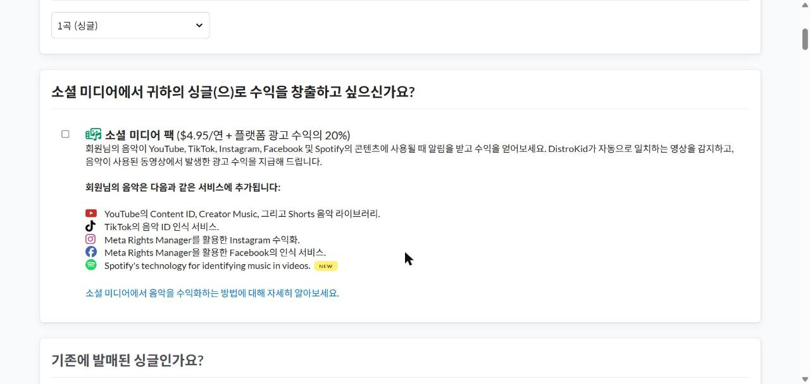
둘. 이 기능은 “모든 소리를 본인이 만들었고 남의 비트·루프·샘플·효과음이 없을 것”을 요구합니다. AI로 만든 음원은 여기서 판단이 갈립니다. 자격이 없는데 신청하면 계정 자체가 위험합니다.
셋. 돈이 나갑니다(연 $4.95 + 벌어온 광고 수익의 20%). 남이 내 곡을 갖다 쓰는 단계에 가기 전에는 낼 이유가 없습니다.
켜는 시점은 내 곡을 남이 쓰는 게 실제로 보이기 시작하고, 채널 수익화 상태가 깨끗해진 뒤입니다.
올리기 전에 준비할 것
업로드 화면은 한 페이지짜리 긴 양식이고 중간 저장이 없습니다. 아래 것들을 먼저 다 만들어 놓고 시작해야 합니다.
음원 파일
커버 이미지
글자 표기 — 반려 사유 1위입니다
- 제목 전체를 대문자로 쓰지 않습니다.
MY SONG✗ →My Song○
(대소문자가 이상하면 마지막 체크박스 목록에 경고가 자동으로 뜹니다. 애플뮤직이 임의로 고칠 수 있다는 뜻입니다.) - 제목에 이모지·특수기호를 넣지 않습니다.
- 제목에 연도를 넣지 않습니다.
내 노래 2026✗ — 화면 안내에 따로 적혀 있습니다. - 제목에
Official VideoLyrics4K같은 유튜브식 꼬리표를 넣지 않습니다.
미리 정해 둘 것
- 아티스트명(단계 2 참고)
- 작사가·작곡가의 본명 — 예명이 아니라 주민등록상 본명을 요구합니다.
- 장르 — 목록에서 골라야 하는데 「발라드」와 「트로트」는 목록에 없습니다. 있는 것 중에 가까운 것을 미리 정해 두십시오. 있는 것: 팝 · 록 · 포크 · 싱어송라이터 · 블루스 · R&B/소울 · 댄스 · 일렉트로닉 · 힙합/랩 · K-Pop · 컨트리 · 재즈 · 얼터너티브 · 월드뮤직 등.
- 발매일 — 아래를 보십시오.
발매일 — 넉넉하게 잡습니다
- 화면 안내는 플레이리스트에 수록될 가능성을 높이려면 최소 일주일 전으로 출시 날짜를 설정하세요라고 되어 있습니다. 이게 최소입니다.
- 실제로는 4주 뒤를 권합니다. 심사 대기가 밀리면 지정한 날에 못 나오고, 반려되면 고쳐서 다시 올릴 시간도 필요합니다.
- 날짜를 안 고르면 ASAP(준비되는 대로)으로 나갑니다.
곡별 증빙 표 — 지금 만들어 둡니다
나중에 “이 곡 정말 당신 겁니까”라는 소명 요구가 오면 이게 유일한 방패입니다. 메모장이든 엑셀이든 어디든 좋습니다.
| 곡 제목 | Suno 생성일시 | 그때 플랜 | 가사 쓴 사람 | WAV 위치 |
|---|---|---|---|---|
업로드 화면 채우기 — 실제 화면 14칸
로그인 후 위쪽 메뉴에서 업로드를 누르면 한 페이지짜리 긴 양식이 나옵니다. 위에서 아래로 순서대로 내려가며 채웁니다.
파일을 먼저 준비하십시오. 음원 WAV와 커버 3000×3000 JPG가 이미 컴퓨터에 있어야 합니다.
맨 끝 버튼은 계속입니다. “제출”이나 “발매”가 아닙니다. 그 버튼을 누르기 전까지는 아무것도 나가지 않으니 안심하고 채우십시오.
1스트리밍 서비스 — 어느 매장에 넣을지
맨 위에 매장 목록이 나옵니다. 거의 다 미리 체크되어 있습니다. 그대로 두십시오.
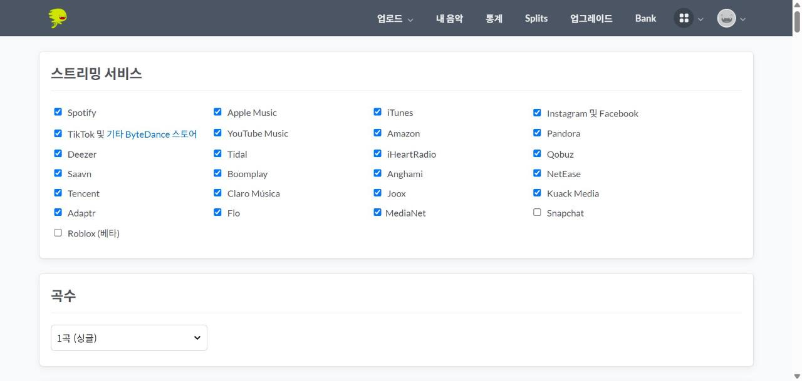
- 한국 매장은 Flo 하나입니다. 멜론·지니·벅스는 이 목록에 없습니다.
- 애플뮤직·iTunes를 체크해 두면 10번 칸에서 크레딧을 반드시 입력해야 합니다. 그게 귀찮아도 빼지 마십시오 — 애플뮤직은 큰 매장입니다.
2곡수
1곡 (싱글)부터 35곡까지 고를 수 있습니다. 첫 발매는 1곡(싱글)을 권합니다. 한 곡에 집중하는 편이 유리하고, 문제가 생겨도 피해가 작습니다.
3소셜 미디어 팩 — 🔴 손대지 마십시오
소셜 미디어에서 귀하의 싱글(으)로 수익을 창출하고 싶으신가요?라는 제목으로 나옵니다. 체크박스가 비어 있는 그대로 두십시오. 이유는 단계 3에 전부 적었습니다.
4기존에 발매된 싱글인가요? / 아티스트·밴드 이름
- 기존에 발매된 싱글인가요? → 처음 내는 곡이면 아니요.
- 아티스트/밴드 이름 → 단계 2에서 정해 둔 이름을 넣습니다. 화면 안내: 본인의 본명, 예명, 밴드 이름만 입력하세요 · 이모티콘 사용 금지 · 음반사 이름을 넣으면 안 됩니다.
5매장별 “이미 등록된 아티스트인가요?” — 5번 반복됩니다
Spotify · Apple Music · YouTube Music · Instagram · Facebook 순서로 같은 질문이 다섯 번 나옵니다. 이미 그 매장에 내 곡이 있으면 한 페이지로 묶어 주겠다는 뜻입니다.
6발매일 · 음반사 · 언어
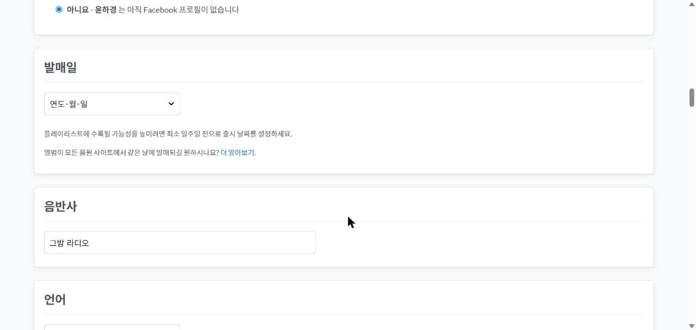
- 발매일 — 4주 뒤 이후로 고릅니다(단계 4 참고).
- 음반사 — 회사가 없으면 비워 두거나 채널 이름을 넣습니다. 아무 이름이나 지어 넣어도 되지만, 실제 회사 이름을 도용하면 안 됩니다. 이 칸은 Musician Plus 이상에서만 나옵니다.
- 언어 — 가사 언어입니다. 한국어 가사면 Korean.
7장르 · 앨범 표지
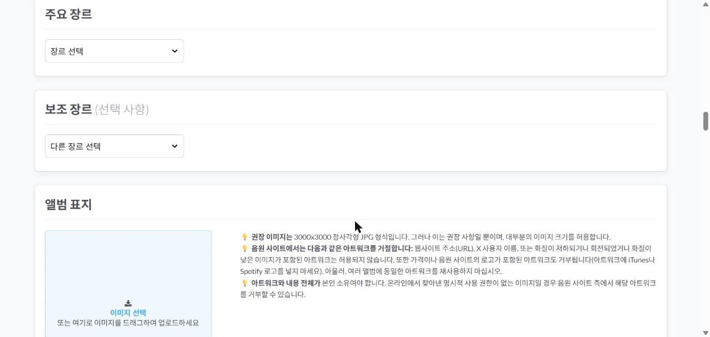
8곡 제목
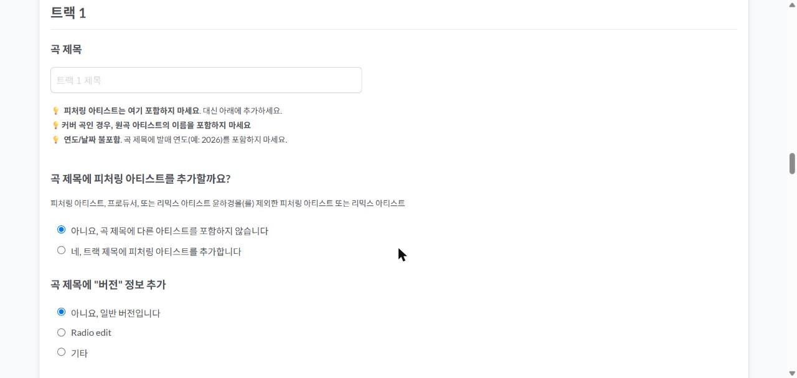
- 곡 제목에 피처링 아티스트를 넣지 않습니다. 바로 아래 전용 칸이 따로 있습니다.
- 커버곡이면 원곡 가수 이름을 제목에 넣지 않습니다.
- 연도를 넣지 않습니다.
- 곡 제목에 “버전” 정보 추가 → 보통 아니요, 일반 버전입니다입니다.
- ISRC 코드가 있습니까? → 없다고 답합니다. 디스트로키드가 무료로 만들어 줍니다. 직접 만들 필요가 없습니다.
바로 아래에 곡 제목 미리보기가 나와서 매장에 어떻게 보일지 보여 줍니다. 여기서 이상하면 위에서 고칩니다.
9오디오 파일 업로드 · 자작곡/커버
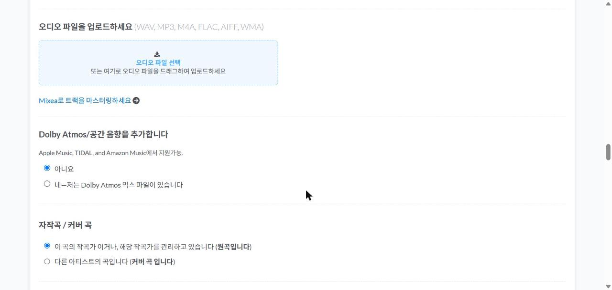
- Mixea로 마스터링 / Dolby Atmos → 둘 다 건드리지 않습니다. Dolby Atmos는 아니요 그대로 둡니다.
- 자작곡 / 커버 곡 → 내가 만든 곡이면 이 곡의 작곡가 이거나, 해당 작곡가를 관리하고 있습니다 (원곡입니다).
10작곡가·작사가의 본명 — 예명 금지
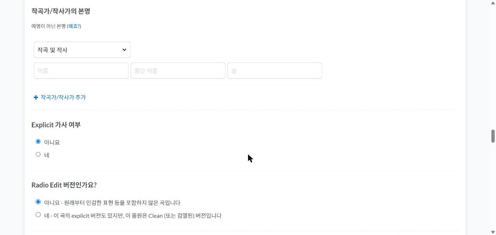
예명이 아니라 본명이어야 합니다. 이 정보는 저작권료를 받을 때 신원을 확인하는 데 쓰입니다.
역할 드롭다운은 가사와 곡을 모두 본인이 했으면 작곡 및 작사입니다. 사람이 여럿이면 작곡가/작사가 추가로 한 명씩 늘립니다.
11🔴 AI 생성 여부 — 이 문서에서 가장 중요한 칸
화면 문구는 해당 곡에 AI가 생성한 음악, 보컬 또는 가사가 포함되어 있나요?입니다.
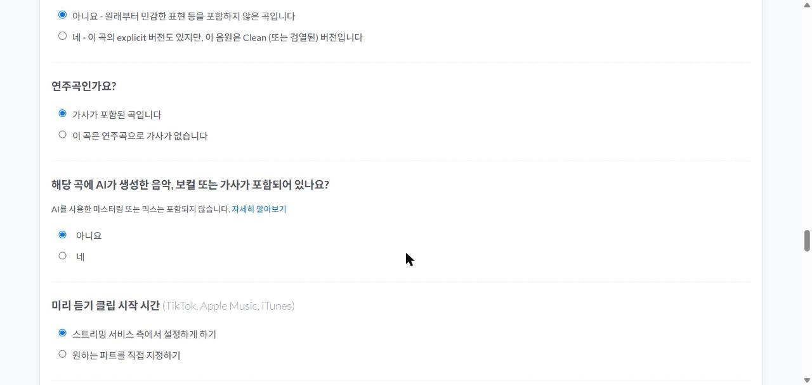
네를 누르면 곧바로 창이 하나 뜹니다 — 이 곡의 어느 부분이 AI로 생성되었나요?
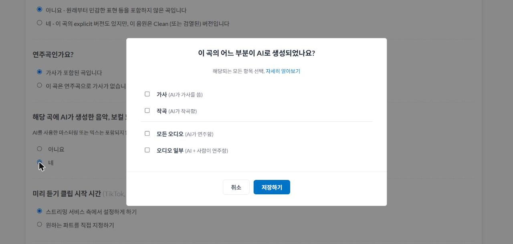
| 내 곡이 이렇다면 | 체크할 것 |
|---|---|
| 가사는 내가 쓰고, 곡과 노래는 Suno가 만듦 | 작곡 + 모든 오디오 (가사는 체크하지 않습니다) |
| 가사까지 전부 Suno가 만듦 | 가사 + 작곡 + 모든 오디오 |
| Suno 음원 위에 내가 직접 연주를 얹음 | 작곡 + 오디오 일부 |
12Explicit · 연주곡 · 미리 듣기 · 판매가
대부분 기본값 그대로 두면 되는 칸들입니다.
- Explicit 가사 여부 → 욕설·성적 표현이 없으면 아니요.
- Radio Edit 버전인가요? → 아니요.
- 연주곡인가요? → 노래가 있으면 가사가 포함된 곡입니다.
- 미리 듣기 클립 시작 시간 → 스트리밍 서비스 측에서 설정하게 하기 그대로 둡니다. 틱톡·애플뮤직에서 몇 초부터 들려줄지인데, 처음에는 맡기는 편이 낫습니다.
- 트랙 판매가 → $0.99가 기본이고 그대로 두면 됩니다. ($0.69 / $0.99 / $1.29 중 선택)
13🔴 Apple Music 추가 요구 사항 — 놓치기 쉬운 함정
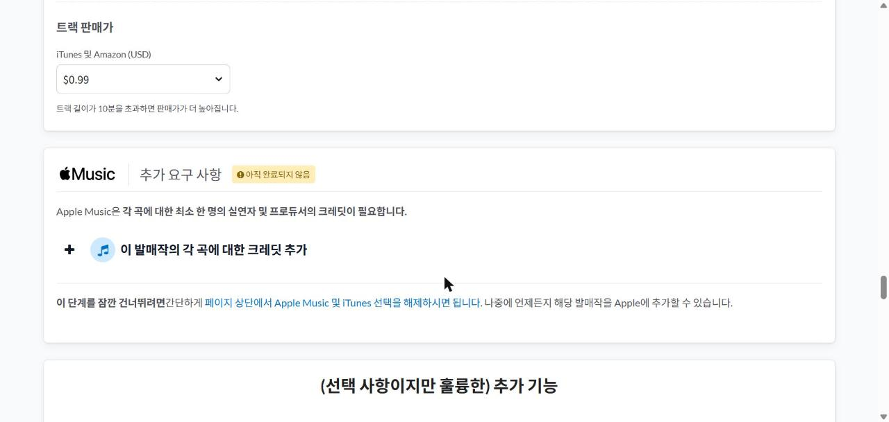
애플뮤직은 곡마다 연주자 1명과 프로듀서 1명의 크레딧을 요구합니다. 이 발매작의 각 곡에 대한 크레딧 추가를 누르면 칸이 펼쳐집니다.
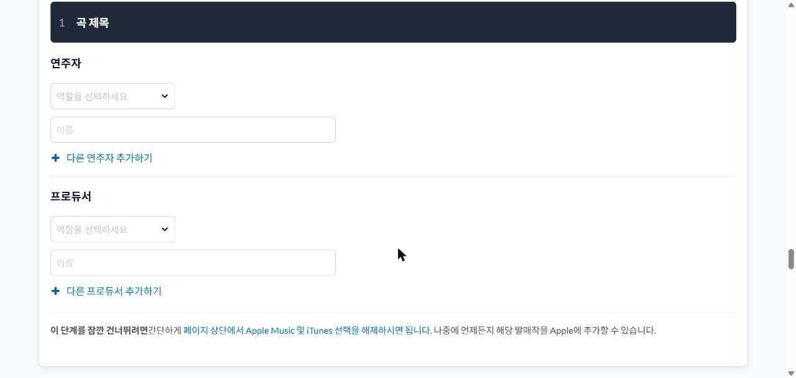
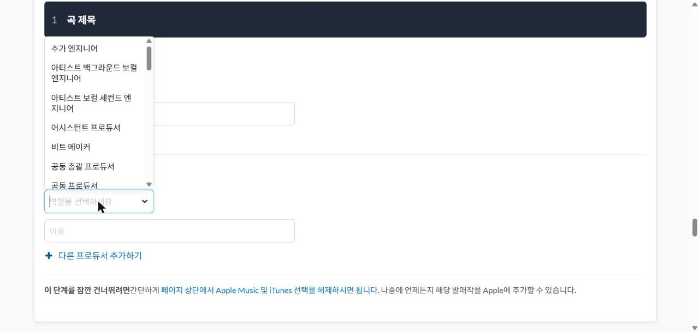
14추가 기능 · 필수 체크박스 · 「계속」
거의 끝났습니다. (선택 사항이지만 훌륭한) 추가 기능 목록이 나옵니다. 전부 처음부터 꺼져 있고, 전부 그대로 두면 됩니다.
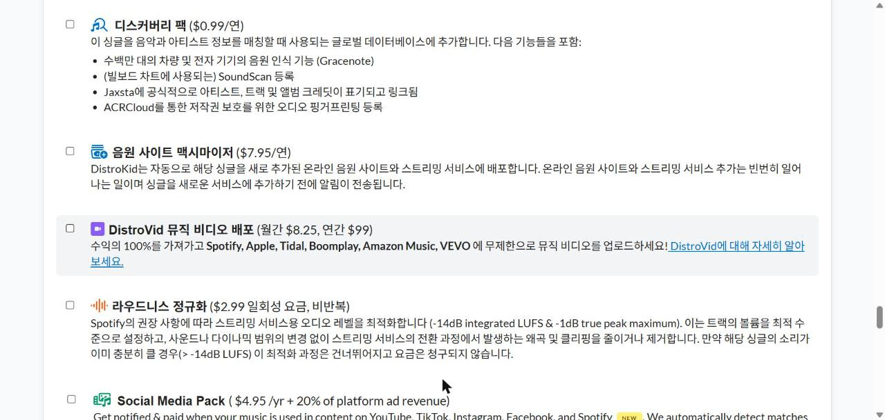
- 레거시 남기기 ($29 일회성) — 구독이 끊겨도 음원이 안 내려갑니다. 나중에 곡이 잘되면 그때 생각할 일입니다.
- 디스커버리 팩 · 음원 사이트 맥시마이저 · DistroVid · 라우드니스 정규화 — 첫 발매에는 전부 불필요합니다.
- 🔴 Social Media Pack — 맨 위에서 봤던 그 항목이 여기 또 나옵니다. 여기서도 비워 둡니다.
그 아래가 중요 체크박스 (필수)입니다. 여섯 개를 하나씩 읽고 전부 체크해야 넘어갑니다.
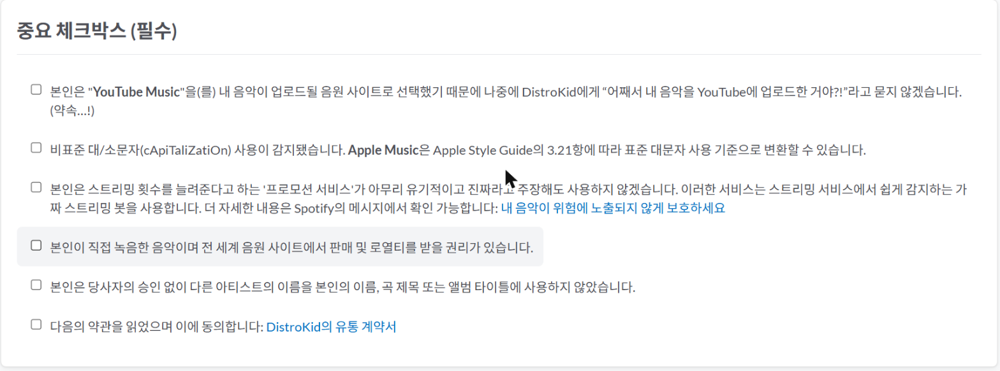
마지막으로 거의 다 왔습니다! 발매 세부 정보를 미리 확인하세요: 아래에 커버·제목·아티스트명·발매일이 요약돼 나옵니다. 여기서 틀린 게 보이면 위로 올라가서 고칩니다. 다 맞으면 파란색 계속 버튼을 누릅니다.
제출한 다음에 벌어지는 일
- 심사 — 며칠 걸립니다. 반려되면 이메일이 옵니다. 대부분 커버 이미지나 제목 표기 문제입니다.
- 스포티파이 아티스트 프로필 연결 — 디스트로키드 안에서 신청합니다. 프로필 사진과 소개를 내가 관리하게 됩니다.
- 플레이리스트 피칭 — 발매 전에 Spotify for Artists에서 신청합니다.
- 유튜브 아트 트랙 확인 — 발매 후 자동으로 생깁니다. 내 뮤직비디오와 별개입니다. 놀라지 마십시오.
- 공식 아티스트 채널 신청 — 아트 트랙과 내 유튜브 채널을 하나로 묶는 신청입니다. 이걸 해야 유튜브에서 “가수 페이지”가 제대로 잡힙니다.
- 정산 — 매장에서 디스트로키드를 거쳐 내 계정으로 들어옵니다. 첫 입금까지 3~4개월을 봅니다. 금액이 작을 때는 출금 수수료가 아까우니 모아서 뺍니다.